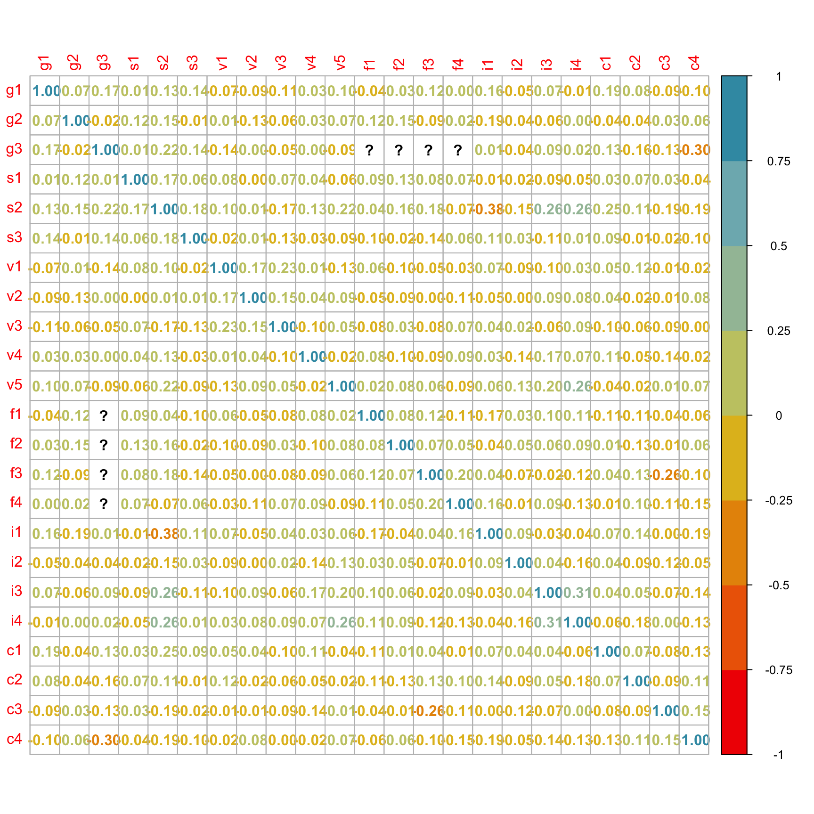
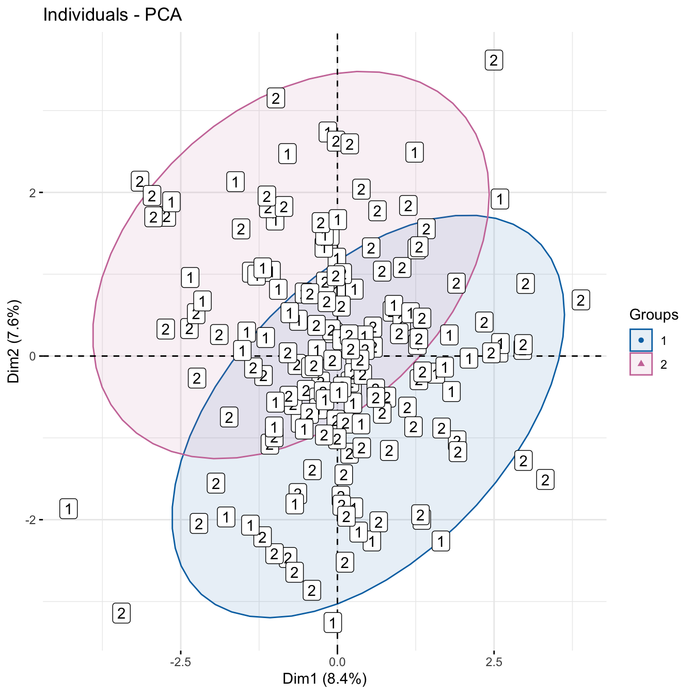

pacman::p_load(tidyverse, gtsummary, janitor, FactoMineR,
factoextra, corrplot, wesanderson, conflicted)61 Fragebogenanalyse
Letzte Änderung am 17. February 2024 um 18:53:23
“It’s always further than it looks. It’s always taller than it looks. And it’s always harder than it looks.” — The Three Rules of Mountaineering (Story und Tait 2019)

Dieses Kapitel ist eine Baustelle und wird es vermutlich auch über das Sommersemester 2024 bleiben. Aktuell weiß ich nämlich noch nicht, wo ich mit dem Kapitel hin will und wo es stehen sollte. Daher können Teile des Codes und des Textes kurzfristig keinen Sinn ergeben oder nicht funktional sein. Es ist geplant eine fertige Version im Juni 2024 vorliegen zu haben.
Der Fragebogen. Ein kompliziertes Stück Statistik. Zum einen ist es die Auswertung der Fragebögen, die auf verschiedenen Methoden basiert. Viele der Methoden habe ich in den vorherigen Kapiteln vorgestellt. Zum anderen können wir hier auch das Design eines Fragebogens nicht unberücksichtigt lassen. Denn ein schlechter Fragebogen wird uns auch nur schlechte Erkenntnisse bringen. Dank der heutigen Technik ist ja ein Online-Query schnell erstellt. Der Fragebogen muss dann aber dennoch die Forschungsfragen beantworten können. Da fängt dann der komplizierte Teil an sich zu Überlegen, was mache ich jetzt eigentlich mit den ganzen Fragen und möglichen Antworten. Wir auch in anderen Kapiteln bin ich kein Experte für die Erstellung eines Fragebogens geschweige denn der Durchführung der Befragung in einem entsprechenden Labor. Dafür gibt es dann andere Experten, wie im folgenden Kasten für die Angehörigen der Hochschule Osnabrück. Sicherlich gibt es an deiner Einrichtung auch die entsprechenden Stellen. Hier soll es wie immer um einen ersten Überblick über verschiedene Themen und Herausforderungen der Fragebogenanalyse gehen.
Beratung für Agrarmarketing & Fragebogenerstellung
Ich bin kein Experte für die Untiefen der Fragebogenerstellung an der Hochschule Osnabrück. Hier empfehle ich auf jeden Fall nochmal eine Beratung im Team von Prof. Dr. Ulrich Enneking. Hier in diesem Kapitel kannst du dann die Einführung lesen.

Watson (1998) mit A primer in survey research
Anzahl an Teilnehmer:innen
Weitere Tutorien für die Fragebogenanalyse
Wir immer geht natürlich mehr als ich hier Vorstellen kann. Du findest im Folgenden Tutorien, die mich hier in dem Kapitel inspiriert haben.
- Survey analysis in R
- Analyzing Complex Survey Data
- Questionnaires and Surveys: Analyses with R
- The Epidemiologist R Handbook | Survey analysis
- Analyzing Survey Data in R
- Vignette des R Pakets
{survey} - Using R for Social Work Research | Survey Research
- 5 Ways to Effectively Visualize Survey Data Using R
61.1 Durchführung
Wie fang ich’s an?
Story und Tait (2019) Survey Research
Gaur u. a. (2020) Reporting Survey Based Studies – a Primer for Authors
Synodinos (2003)
Brühlmann u. a. (2020) mit The quality of data collected online: An investigation of careless responding in a crowdsourced sample
Wie lang soll es sein?
Rolstad u. a. (2011) Response Burden and Questionnaire Length: Is Shorter Better? A Review and Meta-analysis
Roszkowski und Bean (1990) mit Believe it or not! Longer questionnaires have lower response rates
Wie soll ich’s bauen?
The 4,5, and 7 Point Likert Scale
Survey Response Scales: How to Choose the Right One for your Questionnaire
Friedman und Amoo (1999) mit Ratung the rating scales
Wieviele antworten mir?
Edwards u. a. (2009) Methods to increase response to postal and electronic questionnaires
Edwards u. a. (2002) Increasing response rates to postal questionnaires: systematic review
61.2 Genutzte R Pakete
Wir wollen folgende R Pakete in diesem Kapitel nutzen.
Am Ende des Kapitels findest du nochmal den gesamten R Code in einem Rutsch zum selber durchführen oder aber kopieren.
61.3 Daten
Der Druck im Markt auf Bauernhöfe ist groß. Neben den bekannten Erlebnishöfen muss sich in den Weiten Brandenburgs, Niedersachsens und Mecklenburg-Vorpommern jeder Hof was einfallen lassen um Gäste zu sich zu locken. Heutzutage reicht es einfach nicht mehr Rentnern auf Elektrofahrrädern überdimensionierte Sahnetorten anzubieten. Die Enkel wollen auch was sehen. Inspiriert von der Serie Tiger King: Großkatzen und ihre Raubtiere gibt es nun immer mehr Höfe, dich sich den einen oder anderen Tiger oder Großkatze in den Hinterhof sperren. Aufgeschreckt durch den Zwischenfall mit der Löwin von Kleinmachnow - oder wie eine Wildsau durchs Dorf getrieben wurde, gab der Verband “Erlebnishöfe mit Niveau e.V.” eine Umfrage mit dem Titel Nutzung von Großkatzen zur Steigerung der Attraktivität von Erlebnishöfen unter den Mitgliedern in Auftrag. Gleichzeitig sollte auch die Zufriedenheit der Verbandsarbeit abgefragt werden und wie die betriebswirtschaftliche Struktur der 843 Betriebe um die Erlebnishöfe im Verband eigentlich so aussieht.
tiger_tbl <- read_excel("data/survey-serengeti-tiger-king.xlsx", na = "NA") |>
mutate(across(everything(), as_factor))In der Tabelle 61.1 sehen wir einen Auszug aus unseren Ergebnis der Umfrage. Wir haben insgesamt 19 Fragen gestellt und eine Rücklauf von 173 Fragebögen von den Erlebnishöfen erhalten. Das ist eigentlich gar nicht so schlecht, damit haben wir hier eine Rücklaufquote von gut \(20.5\%\) der Fragebögen.
| geschlecht | alter | haben_Sie_tiger | f1Soziodemografisch_erwerb | f2Soziodemografisch_nebenerwerb |
|---|---|---|---|---|
| Männlich | Über 60 Jahre | Ja | Nebenerwerb | Holzwirtschaft |
| Männlich | 30-39 Jahre | Ja | Haupterwerb | NA |
| Männlich | Über 60 Jahre | Ja | Nebenerwerb | NA |
| Männlich | 40-49 Jahre | Ja | Haupterwerb | NA |
| … | … | … | … | … |
| Männlich | 40-49 Jahre | Nein | Nebenerwerb | NA |
| Männlich | Über 60 Jahre | Nein | Haupterwerb | Hofladen |
| Männlich | 40-49 Jahre | Nein | Haupterwerb | NA |
| Männlich | Über 60 Jahre | Nein | Haupterwerb | NA |
Gummibärchendaten?
61.4 Daten preprocessing
Wenn wir uns mit Fragebögen beschäftigen, dann werten wir meisten nicht alle Fragen aus. Das macht auch meistens keinen Sinn. Denn wir stellen zwar recht viele Fragen, aber am Ende müssen wir auch schauen, ob alle Fragen sinnvoll beantwortet wurden oder aber ob wir sehr viele Nichtantworten haben. Davon hängt dann auch die weitere Analyse ab. Wir können uns auch überlegen einzelne Fragen zusammenzufassen, da wir feststellen, dass wir dann am Ende doch nicht so eine feingliedrige Aufteilung wollen.
tiger_num_tbl <- tiger_tbl |>
mutate_all(as.factor) |>
mutate_all(as.numeric)61.4.1 Flowchart oder Flussdiagramm
Data-driven flowcharts in R using DiagrammeR
Argh, warum alles in R?
Ist ein guter Punkt. Du musst natürlich deine Flowchart nicht in R bauen. Wahrscheinlich geht es in PowerPoint sogar schneller und einfacher. Da ich hier aber alles in R mache und dir nicht aufschreiben kann, wie es dann in PowerPoint geht, zeige ich hier auch die R Variante. Suche dir einfach aus was für dich besser passt. Ich löse gerne meine Probleme in R.
61.4.2 Univariater Überblick
tiger_tbl |>
tbl_summary()Ich habe dir jetzt die Ausgabe der Funktion tbl_summary() einmal in dem folgenden Kasten eingeklappt. Sonst sehen wir vor lauter Tabelle nichts mehr und so kannst du hier übersichtlich lesen.
Nach was wollen wir nun als erstes einmal Ausschau halten?
- Fehlende Werte
-
Gibt es eine Frage, bei der fast keiner geantwortet hat?
- Gleiche Einträge
-
Gibt es Fragen, bei denen alle das Gleiche geantwortet haben?
Univariate Ausgabe der Funktion
tbl_summary()
| Characteristic | N = 1731 |
|---|---|
| geschlecht | |
| Männlich | 155 (90%) |
| Weiblich | 18 (10%) |
| alter | |
| Über 60 Jahre | 57 (33%) |
| 30-39 Jahre | 22 (13%) |
| 40-49 Jahre | 42 (24%) |
| 50-59 Jahre | 49 (28%) |
| 18-29 Jahre | 3 (1.7%) |
| haben_Sie_tiger | |
| Ja | 146 (84%) |
| Nein | 27 (16%) |
| f1Soziodemografisch_erwerb | |
| Nebenerwerb | 59 (34%) |
| Haupterwerb | 114 (66%) |
| f2Soziodemografisch_nebenerwerb | |
| Holzwirtschaft | 1 (2.9%) |
| Forst | 3 (8.8%) |
| Schafhaltung | 2 (5.9%) |
| Kartoffeln | 2 (5.9%) |
| Forstwirtschaft | 5 (15%) |
| Ferienhof | 2 (5.9%) |
| Weihnachtsbäume | 2 (5.9%) |
| forst | 1 (2.9%) |
| Forst, LN verpachtet | 1 (2.9%) |
| Forstwirtschaft + Verpachtung | 1 (2.9%) |
| Grünland 1,5 ha und 3 ha Wald | 1 (2.9%) |
| Pferde | 2 (5.9%) |
| Wald | 3 (8.8%) |
| Blumenanbau | 2 (5.9%) |
| Direktvermarktung | 1 (2.9%) |
| Hofladen | 2 (5.9%) |
| Vermietung und Verpachtung | 1 (2.9%) |
| Strohhandel | 1 (2.9%) |
| Pferdehaltung | 1 (2.9%) |
| Unknown | 139 |
| f3Soziodemografisch_stellung | |
| Betriebsleiter | 146 (84%) |
| Leitung Tierproduktion | 3 (1.7%) |
| Hofnachfolger | 14 (8.1%) |
| Leitung Feldwirtschaft | 4 (2.3%) |
| Sonstiges | 5 (2.9%) |
| Angestellter | 1 (0.6%) |
| f1Verbandsarbeit_wahrnehmung | |
| eher präsent | 36 (21%) |
| mäßig präsent | 69 (40%) |
| weniger präsent | 40 (23%) |
| gar nicht präsent | 9 (5.2%) |
| sehr präsent | 18 (10%) |
| Unknown | 1 |
| f2Verbandsarbeit_eigenleistung | |
| Einmal | 103 (60%) |
| Noch nie | 56 (33%) |
| Regelmäßig | 12 (7.0%) |
| Leistung nicht bekannt | 1 (0.6%) |
| Unknown | 1 |
| f3Verbandsarbeit_sinnhaftigkeit | |
| trifft zu | 80 (47%) |
| weder noch | 34 (20%) |
| trifft nicht zu | 26 (15%) |
| trifft gar nicht zu | 8 (4.7%) |
| trifft voll zu | 23 (13%) |
| Unknown | 2 |
| f1Fuetterung_wöchentlich | |
| Nein | 44 (30%) |
| Ja | 101 (70%) |
| Unknown | 28 |
| f2Fuetterung_täglich | |
| Ja | 111 (77%) |
| Nein | 34 (23%) |
| Unknown | 28 |
| f3Fuetterung_anteil_pflanzlich | |
| Nein | 82 (57%) |
| Ja | 63 (43%) |
| Unknown | 28 |
| f4Fuetterung_joghurt | |
| Ja | 40 (28%) |
| Nein | 105 (72%) |
| Unknown | 28 |
| f1Imagearbeit_ausweiten | |
| Ja | 135 (79%) |
| Nein | 36 (21%) |
| Unknown | 2 |
| f2Imagearbeit_ist | |
| sehr zufrieden | 19 (14%) |
| weder noch | 37 (27%) |
| eher zufrieden | 57 (42%) |
| eher unzufrieden | 17 (13%) |
| sehr unzufrieden | 5 (3.7%) |
| Unknown | 38 |
| f3Imagearbeit_wahrnehmung | |
| sehr aktiv | 20 (15%) |
| weder noch | 40 (30%) |
| eher aktiv | 68 (50%) |
| eher nicht aktiv | 6 (4.4%) |
| gar nicht aktiv | 1 (0.7%) |
| Unknown | 38 |
| f1Stimmungsabfrage_zukünftig_mehr_tiger | |
| gelegentlich | 62 (36%) |
| immer | 67 (39%) |
| nie | 41 (24%) |
| Unknown | 3 |
| f2Stimmungsabfrage_soziale_medien_nutzung | |
| nie | 155 (91%) |
| immer | 9 (5.3%) |
| gelegentlich | 6 (3.5%) |
| Unknown | 3 |
| f4Stimmungsabfrage_wunsch_rückmeldung | |
| Post | 1 (100%) |
| Unknown | 172 |
| 1 n (%) | |
Vergleichende Ausgabe der Funktion
tbl_summary() für Tigerbesitz
| Characteristic | Ja, N = 1461 | Nein, N = 271 | p-value2 |
|---|---|---|---|
| geschlecht | 0.040 | ||
| Männlich | 134 (92%) | 21 (78%) | |
| Weiblich | 12 (8.2%) | 6 (22%) | |
| alter | 0.2 | ||
| Über 60 Jahre | 46 (32%) | 11 (41%) | |
| 30-39 Jahre | 22 (15%) | 0 (0%) | |
| 40-49 Jahre | 34 (23%) | 8 (30%) | |
| 50-59 Jahre | 41 (28%) | 8 (30%) | |
| 18-29 Jahre | 3 (2.1%) | 0 (0%) | |
| f1Soziodemografisch_erwerb | >0.9 | ||
| Nebenerwerb | 50 (34%) | 9 (33%) | |
| Haupterwerb | 96 (66%) | 18 (67%) | |
| f2Soziodemografisch_nebenerwerb | 0.8 | ||
| Holzwirtschaft | 1 (3.6%) | 0 (0%) | |
| Forst | 3 (11%) | 0 (0%) | |
| Schafhaltung | 2 (7.1%) | 0 (0%) | |
| Kartoffeln | 2 (7.1%) | 0 (0%) | |
| Forstwirtschaft | 5 (18%) | 0 (0%) | |
| Ferienhof | 1 (3.6%) | 1 (17%) | |
| Weihnachtsbäume | 1 (3.6%) | 1 (17%) | |
| forst | 1 (3.6%) | 0 (0%) | |
| Forst, LN verpachtet | 1 (3.6%) | 0 (0%) | |
| Forstwirtschaft + Verpachtung | 1 (3.6%) | 0 (0%) | |
| Grünland 1,5 ha und 3 ha Wald | 1 (3.6%) | 0 (0%) | |
| Pferde | 1 (3.6%) | 1 (17%) | |
| Wald | 2 (7.1%) | 1 (17%) | |
| Blumenanbau | 1 (3.6%) | 1 (17%) | |
| Direktvermarktung | 1 (3.6%) | 0 (0%) | |
| Hofladen | 1 (3.6%) | 1 (17%) | |
| Vermietung und Verpachtung | 1 (3.6%) | 0 (0%) | |
| Strohhandel | 1 (3.6%) | 0 (0%) | |
| Pferdehaltung | 1 (3.6%) | 0 (0%) | |
| Unknown | 118 | 21 | |
| f3Soziodemografisch_stellung | 0.013 | ||
| Betriebsleiter | 128 (88%) | 18 (67%) | |
| Leitung Tierproduktion | 1 (0.7%) | 2 (7.4%) | |
| Hofnachfolger | 11 (7.5%) | 3 (11%) | |
| Leitung Feldwirtschaft | 2 (1.4%) | 2 (7.4%) | |
| Sonstiges | 3 (2.1%) | 2 (7.4%) | |
| Angestellter | 1 (0.7%) | 0 (0%) | |
| f1Verbandsarbeit_wahrnehmung | 0.2 | ||
| eher präsent | 32 (22%) | 4 (15%) | |
| mäßig präsent | 55 (38%) | 14 (52%) | |
| weniger präsent | 37 (26%) | 3 (11%) | |
| gar nicht präsent | 8 (5.5%) | 1 (3.7%) | |
| sehr präsent | 13 (9.0%) | 5 (19%) | |
| Unknown | 1 | 0 | |
| f2Verbandsarbeit_eigenleistung | 0.6 | ||
| Einmal | 88 (61%) | 15 (56%) | |
| Noch nie | 47 (32%) | 9 (33%) | |
| Regelmäßig | 9 (6.2%) | 3 (11%) | |
| Leistung nicht bekannt | 1 (0.7%) | 0 (0%) | |
| Unknown | 1 | 0 | |
| f3Verbandsarbeit_sinnhaftigkeit | 0.7 | ||
| trifft zu | 67 (46%) | 13 (50%) | |
| weder noch | 29 (20%) | 5 (19%) | |
| trifft nicht zu | 23 (16%) | 3 (12%) | |
| trifft gar nicht zu | 8 (5.5%) | 0 (0%) | |
| trifft voll zu | 18 (12%) | 5 (19%) | |
| Unknown | 1 | 1 | |
| f1Fuetterung_wöchentlich | >0.9 | ||
| Nein | 44 (30%) | 0 (NA%) | |
| Ja | 101 (70%) | 0 (NA%) | |
| Unknown | 1 | 27 | |
| f2Fuetterung_täglich | >0.9 | ||
| Ja | 111 (77%) | 0 (NA%) | |
| Nein | 34 (23%) | 0 (NA%) | |
| Unknown | 1 | 27 | |
| f3Fuetterung_anteil_pflanzlich | >0.9 | ||
| Nein | 82 (57%) | 0 (NA%) | |
| Ja | 63 (43%) | 0 (NA%) | |
| Unknown | 1 | 27 | |
| f4Fuetterung_joghurt | >0.9 | ||
| Ja | 40 (28%) | 0 (NA%) | |
| Nein | 105 (72%) | 0 (NA%) | |
| Unknown | 1 | 27 | |
| f1Imagearbeit_ausweiten | 0.2 | ||
| Ja | 117 (81%) | 18 (69%) | |
| Nein | 28 (19%) | 8 (31%) | |
| Unknown | 1 | 1 | |
| f2Imagearbeit_ist | 0.7 | ||
| sehr zufrieden | 15 (13%) | 4 (22%) | |
| weder noch | 32 (27%) | 5 (28%) | |
| eher zufrieden | 49 (42%) | 8 (44%) | |
| eher unzufrieden | 16 (14%) | 1 (5.6%) | |
| sehr unzufrieden | 5 (4.3%) | 0 (0%) | |
| Unknown | 29 | 9 | |
| f3Imagearbeit_wahrnehmung | 0.7 | ||
| sehr aktiv | 16 (14%) | 4 (22%) | |
| weder noch | 36 (31%) | 4 (22%) | |
| eher aktiv | 59 (50%) | 9 (50%) | |
| eher nicht aktiv | 5 (4.3%) | 1 (5.6%) | |
| gar nicht aktiv | 1 (0.9%) | 0 (0%) | |
| Unknown | 29 | 9 | |
| f1Stimmungsabfrage_zukünftig_mehr_tiger | 0.039 | ||
| gelegentlich | 54 (37%) | 8 (32%) | |
| immer | 52 (36%) | 15 (60%) | |
| nie | 39 (27%) | 2 (8.0%) | |
| Unknown | 1 | 2 | |
| f2Stimmungsabfrage_soziale_medien_nutzung | 0.7 | ||
| nie | 133 (92%) | 22 (88%) | |
| immer | 7 (4.8%) | 2 (8.0%) | |
| gelegentlich | 5 (3.4%) | 1 (4.0%) | |
| Unknown | 1 | 2 | |
| f4Stimmungsabfrage_wunsch_rückmeldung | |||
| Post | 1 (100%) | 0 (NA%) | |
| Unknown | 145 | 27 | |
| 1 n (%) | |||
| 2 Fisher’s exact test; Pearson’s Chi-squared test | |||
tiger_clean_num_tbl <- tiger_num_tbl |>
select(-f2Soziodemografisch_nebenerwerb,
-f4Stimmungsabfrage_wunsch_rückmeldung) |>
na.omit()61.4.3 Zusammenfassen
…von einzelnen Fragen
feed_tbl <- tiger_tbl |>
select(matches("Fuetterung")) |>
mutate(across(matches("Fuetterung"), \(x) as.numeric(x)-1)) |>
mutate(sum_feeding = rowSums(across(matches("Fuetterung"))))
feed_tbl |>
select(sum_feeding, everything())# A tibble: 173 × 5
sum_feeding f1Fuetterung_wöchentlich f2Fuetterung_täglich
<dbl> <dbl> <dbl>
1 0 0 0
2 3 1 0
3 1 1 0
4 2 1 0
5 2 1 0
6 1 0 0
7 4 1 1
8 1 0 0
9 1 0 0
10 1 0 0
# ℹ 163 more rows
# ℹ 2 more variables: f3Fuetterung_anteil_pflanzlich <dbl>,
# f4Fuetterung_joghurt <dbl>feed_tbl |>
tabyl(sum_feeding) |>
round(2) sum_feeding n percent valid_percent
0 6 0.03 0.04
1 38 0.22 0.26
2 50 0.29 0.34
3 39 0.23 0.27
4 12 0.07 0.08
NA 28 0.16 NAMit der R Funktion case_when() können wir uns jetzt neue Werte bauen.
… von Antwortenmöglichkeiten
61.4.4 Repräsentativer Teilnehmer
61.5 Korrelation der Fragen
cor_mat <- tiger_clean_num_tbl |>
cor(method = "spearman")Warning in cor(tiger_clean_num_tbl, method = "spearman"): the standard
deviation is zerocorrplot(cor_mat, method = 'number',
col = wes_palette("Zissou1", 8, type = "continuous"))
61.6 Hauptkomponentenanalyse
pca_tiger <- PCA(tiger_num_tbl, scale.unit = TRUE,
ncp = 5, graph = FALSE)Warning in PCA(tiger_num_tbl, scale.unit = TRUE, ncp = 5, graph = FALSE):
Missing values are imputed by the mean of the variable: you should use the
imputePCA function of the missMDA packagefviz_pca_var(pca_tiger, col.var = "cos2",
gradient.cols = c("#00AFBB", "#E7B800", "#FC4E07"),
repel = TRUE)
fviz_pca_ind(pca_tiger,
col.ind = "cos2",
gradient.cols = c("#00AFBB", "#E7B800", "#FC4E07"),
repel = TRUE) +
scale_x_continuous(expand = expansion(add = c(0.5, 1))) +
scale_y_continuous(expand = expansion(add = c(0.5, 0.5))) 
ind_tiger <- get_pca_ind(pca_tiger)
grp_tiger_ind <- kmeans(ind_tiger$coord, centers = 3, nstart = 25) %>%
pluck("cluster") %>%
as_factor()fviz_pca_ind(pca_tiger,
geom.ind = "point",
col.ind = grp_tiger_ind,
palette = c("#F0E442", "#0072B2", "#D55E00", "#CC79A7"),
addEllipses = TRUE,
legend.title = "Groups", mean.point = FALSE) +
geom_label(aes(label = tiger_num_tbl$haben_Sie_tiger))
61.7 Lime Survey
Referenzen
Brühlmann F, Petralito S, Aeschbach LF, Opwis K. 2020. The quality of data collected online: An investigation of careless responding in a crowdsourced sample. Methods in Psychology 2: 100022.
Edwards PJ, Roberts I, Clarke MJ, DiGuiseppi C, Wentz R, Kwan I, Cooper R, Felix LM, Pratap S. 2009. Methods to increase response to postal and electronic questionnaires. Cochrane database of systematic reviews.
Edwards P, Roberts I, Clarke M, DiGuiseppi C, Pratap S, Wentz R, Kwan I. 2002. Increasing response rates to postal questionnaires: systematic review. Bmj 324: 1183.
Friedman HH, Amoo T. 1999. Rating the rating scales. Friedman, Hershey H. and Amoo, Taiwo (1999)." Rating the Rating Scales." Journal of Marketing Management, Winter 114–123.
Gaur PS, Zimba O, Agarwal V, Gupta L. 2020. Reporting survey based studies—a primer for authors. J Korean Med Sci 35: e398.
Rolstad S, Adler J, Rydén A. 2011. Response burden and questionnaire length: is shorter better? A review and meta-analysis. Value in Health 14: 1101–1108.
Roszkowski MJ, Bean AG. 1990. Believe it or not! Longer questionnaires have lower response rates. Journal of Business and Psychology 4: 495–509.
Story DA, Tait AR. 2019. Survey research. Anesthesiology 130: 192–202.
Synodinos NE. 2003. The „art“ of questionnaire construction: some important considerations for manufacturing studies. Integrated manufacturing systems 14: 221–237.
Watson SC. 1998. A primer in survey research. The Journal of Continuing Higher Education 46: 31–40.